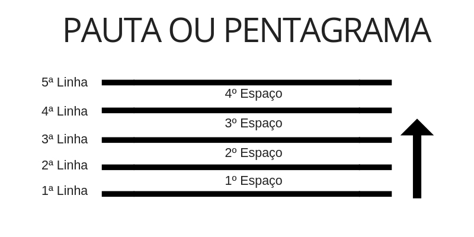
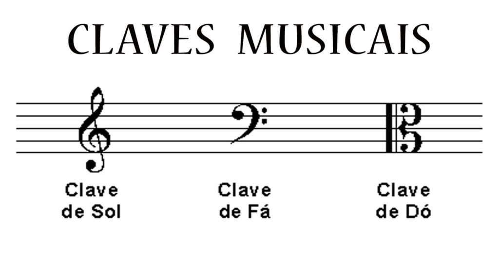
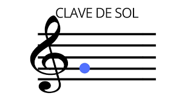
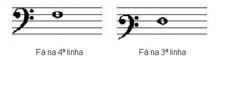

Módulo 4
PENTAGRAMA
Para representar os sons através das figuras, utilizam-se um conjunto de 5 linhas e 4 espaços, chamado Pentagrama ou Pauta.
Obs.: As linhas e espaços do pentagrama são contados de baixo para cima.
CLAVE
O nome e a altura das figuras no pentagrama são denominados pela clave.
A clave é escrita no início do pentagrama e dá o seu nome à nota escrita em sua linha de referência. Há 3 sinais de clave:
Atualmente utiliza-se 07 claves, representadas pelos 3 sinais.
Clave de Sol:
é escrita na 2° linha. Alguns instrumentos que a utilizam: violino, clarineta, flauta, oboé, sax soprano, trompete, etc.

Clave de Fá:
é escrita na 3° ou 4° linha. instrumentos que a utilizam (4° linha): fagote, violoncelo, sax tenor, trombone, tuba, etc

Clave de Dó:
é escrita nas 1°, 2°, 3° ou 4° linha. instrumento que a utiliza (3° linha) viola